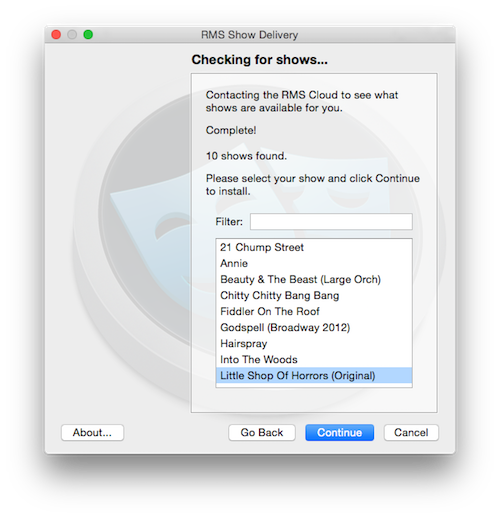

RMS Mix® - Desktop
RMS Mix® is designed specifically for ease of use. The interface is streamlined to give you the simplest method of playing your show, while still allowing for more complex editing if you have the need. (Please note that editing a show requires the use of either Sinfonia® or RMS Coach® software.)
Trial vs. Full version
The trial version is a fully featured application that allows you to experiment with how RMS Mix® works. This version gives you full access to the first few songs in the show. If you decide that RMS Mix® works for you, then you will be able to purchase and authenticate the full version through the program itself, without any additional downloads.
The full version of RMS Mix® is only available to individuals and organizations that have acquired the license for a specific show through the appropriate licensing organization (MTI, R&H, etc). In order to purchase the unlock code for the full version, you will need to license the production through the licensing organization. The license will run for a particular length of time, depending upon the arrangement you have made with the licensing organization. At the end of your license, RMS Mix® will notify you that your license has expired.
Note: there is no limit to the time you can use RMS Mix® before your performances. So provided you have a valid performance license, you could rehearse with RMS Mix® for as long as you are likely to need it. A few weeks, a month, a year – it's up to you.
Purchasing the Full Version
When you click on the Purchase button, you will be taken to a screen where you will be asked to fill out the appropriate information. Enter your name, organization, desired show, email address, and location. Important: if you have not already licensed the show through the appropriate organization, you will not be able to purchase the full version of RMS Mix®.
If there is an Internet connection issue, then you may receive an error screen. If you then hit "Okay", a file will be created on your desktop called 'rms_authentication.txt'. You can email that file to info@rms.biz from a computer with an Internet connection to continue with the purchase request.
Once RMS receives your request, we will check to make sure you have licensed the show for production. Once we have confirmed your license, we will email you a link to an electronic invoice that can be paid online via credit card or e-check. We can also accept paper checks. Please note that we do not accept payment via purchase order. After the payment has been processed, you will be emailed an unlock code.
Authentication
To fully authorize RMS Mix, you will need to use either the QR code provided to the original purchaser, or the order number.
1. Launch RMS Mix®
2. Under the 'Tools' menu, choose 'Show Management'
3. Click the '+' button
4. Enter your name and email (if you have done this previously during an authentication request, this step may be skipped)
5. Click 'Import a QR image', and browse to the directory where you saved the QR image sent by RMS.
6. If you don't have a QR image, click on the text at the bottom of the window.
7. On the following screen, enter the order number for your specific production (SNF or CHF followed by 6 digits).
Your copy of RMS Mix® should now be ready to use! If you have any questions or difficulties with this process, feel free to contact us at 212.620.0774 or online at http://www.rms.biz/contact/
Additional Installations
RMS Mix® can be installed on as many computers as necessary for the duration of your license. This means that each actor or member of the production team can have their own copy of the program to practice with.
To install on additional computers, your cast or production team will need the QR code sent to you by RMS when you purchased the program (or the order number for your production).
Expiration of License
Licenses for a shows are time based. If you attempt to launch RMS Mix® after this period, you will be notified of this with a dialogue box.
If you wish to extend the length of the license, or feel that there is a mistake, then please call us at 212-620-0774 and we will be happy to assist you.
Show Management
If you are using RMS Coach® or Sinfonia®, with RMS Mix®, you can export songs from one of those programs to play in RMS Mix®. It is even possible to have multiple versions of the show to play (for example, if you need songs in different keys depending on who is singing them).
There is also a catalogue of pre-programmed "by the book" commercial titles available. To download these, select 'Get Shows' under the 'Tools' menu. RMS Mix® will exit and the RMS Show Delivery program will launch. You see a list of available shows to download. Highlight the one you would like and hit 'Continue'.

The show will then proceed to download. Please note that this may take some time depending on the speed of your internet connection.
Note that if you are using a trial version of RMS Mix®, only the first 5 songs for the downloaded show will be available.
Loading a show from RMS Coach® or Sinfonia®
To load an export of your show from one of our other programs, you need to use the "Show Management" utility found under the "Tools" menu.
If you have saved any local exports from either RMS Coach® or Sinfonia®, they will show up in this screen under folders for your specific order number. You can navigate into the folder and click on a file name to load that export.
To download an export that has been saved to the cloud server, the steps are the same as listed above under the Authentication section.
For instructions on how to export shows within RMS Coach® or Sinfonia® for use in RMS Mix®, please see the relevant sections in either manual:
Interface
There are two main windows with the desktop program - the Navigation window and the Mixer window.
Navigation Window
The navigation window is broken into a few subsections, allowing you quick and easy access to your entire show with just a few mouse clicks.
Song List
On the left is the list of all the songs in your show, in performance order. You can select specific songs with the mouse or by the using the up and down arrow keys on your computer.
Please note that for songs that attacca straight into the following song, they will be grouped together under the song list. You will still be able jump to the beginning of the "secondary" song by using the marker list on the right, however.
In addition, songs that have extended pauses in the middle for dialogue or other dramatic requirements will be separated into multiple parts in the song list. Be sure to familiarize yourself the layout of your specific show before using RMS Mix® in a rehearsal!
Marker List
On the right side of the navigation window is a list of markers for the currently selected song. By clicking on a marker, you will immediately jump to that part of the song. You can also see the approximate placement of markers within a song as red lines within the timeline.
Tip - you can jump to a marker while the song is already playing, in real time. Use this functionality to handle events like a "jump cut", or for a situation where a singer has missed an entrance and you need to re-start the current section.
Customizing the marker list
By default, markers are pre-programmed for all RMS Mix® shows. However, if you have a license for RMS Coach® or Sinfonia®, you can use either of those programs to modify and create your own markers for the show. For more information please see the relevant sections in either of the RMS Coach® or Sinfonia® manuals.
Note that for repeated sections of music, RMS Mix® will append a suffix to any markers contained within. For example, a marker named "Vocal" inside a section of music that plays 3 times will be called "Vocal.1", "Vocal.2" and "Vocal.3" respectively.
Transport
The transport bar is found in the middle of the navigation window. From left to right, the buttons have the following functionality:
- toggle visual/audio metronome
- rewind to beginning of song / previous song
- rewind by one measure
- play
- stop
- fast forward by one measure
- fast forward to next song
- exit vamp
Metronome
RMS Mix® has a metronome feature to assist in your learning and rehearsal process. When you toggle the metronome on using the button on the transport, it will activate both an audio as well as a visual click. (If the visual click window is not visible, make sure that it is checked on under the "Windows" menu bar). You can resize the visual click by using the arrow on the lower right side of the window.
To change the volume of the click, go to the preferences menu and follow the instructions below.
Vamping
RMS Mix® has built-in capabilities to handle vamping within songs. Whenever RMS Mix® comes across a section of a song pre-designated as a vamp, the "Exit vamp" button will highlight like this:
This tells you that RMS Mix® is now within a vamp, and will keep repeating that section of music indefinitely until you press the "exit vamp" button. Once pressed, the program will finish its current playthrough of the vamp and proceed to the next section of music.
If you would like a vamp to be programmed to play a specific number of times on every playthrough, simply click-and-hold on the vamp icon when it is lit up for that particular vamp. Select the number of times you would like it to play and Mix® will use that for all future playthroughs.

To return the vamp to default behavior, select the infinity symbol at the top of the list.
Arbitrary relocate
RMS Mix® has the ability to instantly jump to any spot within a song by either measure number or marker name. You do this by first "arming" the relocation, then activating it.
To arm, simply type in either the bar number or marker name (RMS Mix® will autocomplete the marker as soon as possible).
Hit enter, and the relocate is now "armed".
To activate the relocation hit enter again and RMS Mix® will instantly jump to that moment.
Parts Mixer
The parts mixer is found within the mix window. In it you will find channel strips for predefined groups of instruments for your current show. A standard parts mixer might include the following families: Reeds, Brass, High Strings, Low Strings, Percussion, Keyboards, Guitar, Other.
This allows you to easily adjust the overall mix of your show without needing to micro-manage each individual instrument.
The headphone icon at the top will allow you to test the output of that channel strip. This is useful if you are first setting up your sound system and want a sound loop.
The main slider controls the overall volume of that grouping. Below that is a knob and text box for panning left/right.
The drop down text box at the bottom allows you to specify which output you would like to use for that channel strip. For a basic setup that only has a single stereo out, there is only one option "A".
The speaker icons along the bottom will mute/unmute the channel strip.
Customizing instrument groupings
RMS Mix® comes with pre-programmed instrument groupings for each show, but if you have a license for Sinfonia®, you can specify your own instrument groupings. For more information, please see the relevant section within the Sinfonia® manual.
Output Mixer
The other part of the mix window is the Output Mixer. This gives you control for pairs of stereo outputs on your system.
The master fader on the right control the overall sound output level of RMS Mix®. Please note that this is independent of your system's volume controls.
Reverb settings
The knob at the bottom of each strip along the left allows you to control the amount of reverb "send" from that output.
The knob at the bottom of the master fader lets you control the overall level of reverb applied to the entire output of RMS Mix®. The drop-down menu at the bottom lets you select which output the reverb is sent to.
Multi-channel output
A default setup for a computer without a specialized audio interface will only have a single stereo output, designated "A". If you are using a more complicated setup, each pair of available stereo outputs will show up as "B", "C" and so forth. By default, everything routes to the "A" output.
Menu Items
Preferences
Under the "Audio' section of the preferences menu, you will see a list of all audio interfaces available for your system. If you have connected an interface and aren't getting sound through it from RMS Mix®, check that it is selected here.
Under the "Functions" tab, you are able to re-assign the function keys on your keyboard. The possible commands are:
- Rewind/Previous Song
- Previous Marker
- Go
- Stop
- Next Marker
- Next Song
- Exit Vamp
Under the "Click" tab, you can adjust the volume of the click by decibals (dB). This can be done in realtime while RMS Mix® is playing. If you set the volume to "off" but have the click activated, you will still be able to see the visual click if that window is open.
You can also direct the click to a different stereo output pair, if your audio interface has more than one.
If the "countoff" checkbox is checked, then the click will play for a full measure before RMS Mix® starts playback.
Show Management
Found under the "Tools" menu, you can use "Show Management" to switch between the different exports and downloads of shows available on your computer. These are organized in folders by the show, and then specific exports will be listed by the name you gave each export from with Sinfonia® or Coach®.